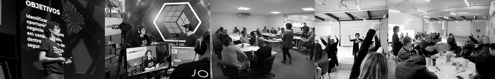
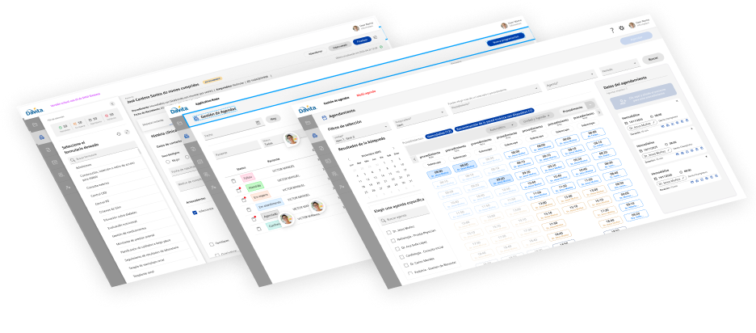

Unicef
O desafio era compreender como agentes de saúde e gestores trabalhavam para criar uma solução que se encaixasse na rotina.
Ver case completo →
Olá, sou Patricia Prado. Doutoranda em Psicolinguística Experimental (UFSC), Mestre em Design (UDESC) e Cofundadora da Ideativo Design. Atuo na investigação sobre multimodalidade e IA, e na capacitação de equipes corporativas e governamentais.

Também tenho experiência em conduzir treinamentos, compartilhar conhecimentos e facilitar a adoção de novas práticas. Ajudo equipes a compreender conceitos, aplicar métodos no dia a dia e ganhar autonomia para tomar decisões melhores.
Investigo o contexto, as necessidades das pessoas, os comportamentos e as restrições do negócio e da tecnologia. A partir disso, ajudo a definir qual problema vale a pena resolver.
Conecto evidências, objetivos e oportunidades para propor soluções que façam sentido para o negócio, sejam viáveis para a tecnologia e funcionem para as pessoas. Junto com as equipes, transformo essas escolhas em prioridades e direcionamentos claros.
Faço o handoff para desenvolvimento com contexto e critérios bem definidos. Depois da entrega, acompanho os resultados e o feedback para entender o que funcionou, ajustar a estratégia e orientar os próximos passos.
O desafio era compreender como agentes de saúde e gestores trabalhavam para criar uma solução que se encaixasse na rotina.
Ver case completo →


Transformação de um sistema hoteleiro nativo em SaaS com contratação self-service.
Ver case completo →